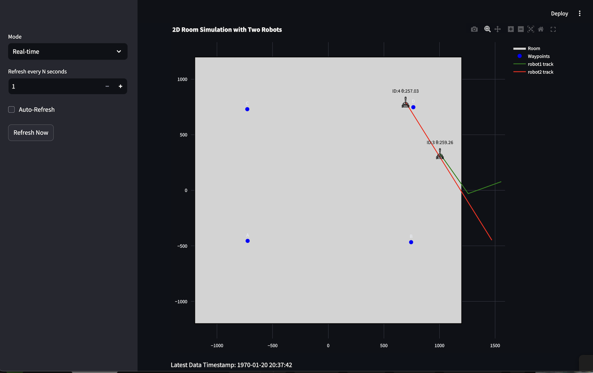
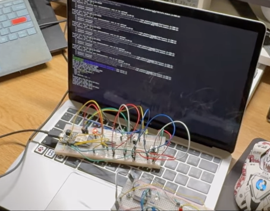
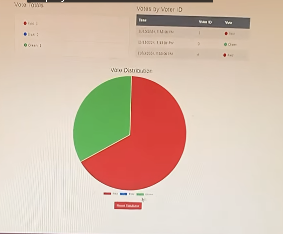
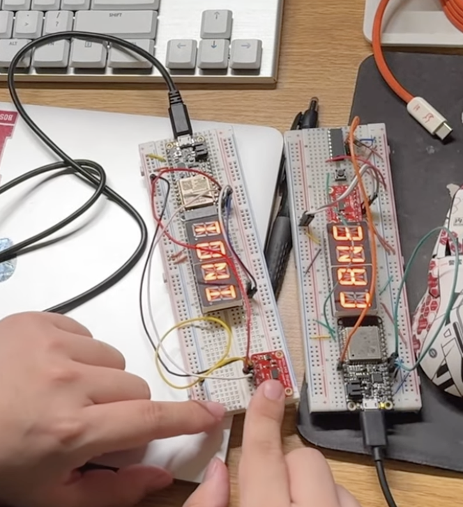
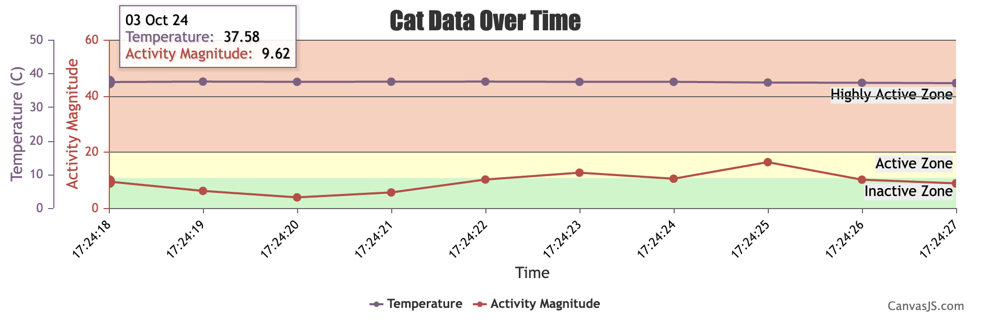
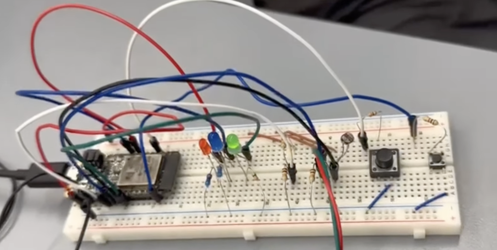
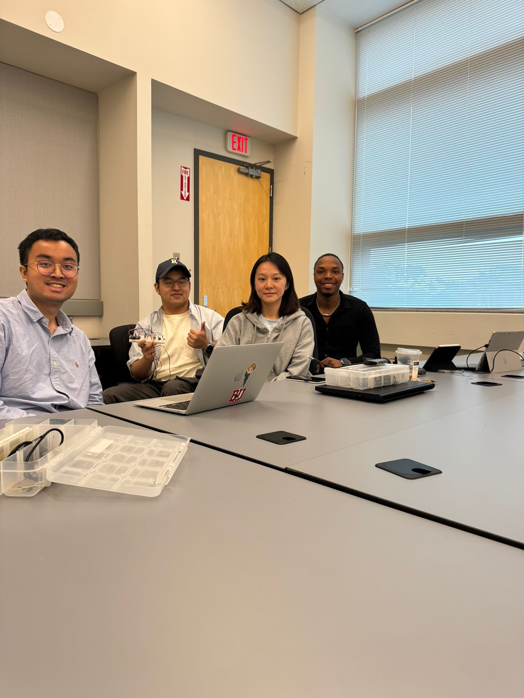

5 Smart & Connected Systems Projects
Fall 2024
Project Description
This page groups my Smart and Connected Systems projects from Fall 2024. These projects were all built around embedded firmware, networking, sensing, and distributed cyber-physical systems, and together they gave me a strong foundation in ESP32 development, RTOS design, Node.js integration, and real-time system behavior.
This class has sparked my interest in the intersection of hardware and software in modern embedded systems and has shown me how software can extend beyond the computer screen to make a tangible impact on the physical world.
Since this course included several smaller builds instead of one single semester-long product, you can find each project below.
Indoor Robot Navigation System
Project Description
This project focused on indoor robot navigation using an ESP32-based robot platform. The system combined RTOS firmware, wireless remote control, obstacle avoidance, and external position tracking so the robot could be both manually controlled and guided through dynamic indoor spaces.
My Responsibilities
- Delivered C firmware for an ESP32 microcontroller with RTOS, control algorithms, feedback-based navigation, and wireless remote functionality.
- Created wireless control for manual operation using WASD keyboard inputs.
- Designed obstacle avoidance with ultrasonic and IR sensors and integrated Optitrack position tracking through a Node.js server over UDP.
Skills I Learned
- Embedded control in C with an RTOS.
- Sensor fusion for navigation and obstacle avoidance.
- UDP-based communication between hardware and external software tools.
Project Links
Photos
Indoor Robot Navigation Dashboard
Project Description
To support the navigation project, I also built a dashboard layer for visualizing robot behavior. This subproject focused on showing paths, waypoints, and motion data in a way that made testing and debugging much easier.
My Responsibilities
- Built a 2D visualization of robot paths and waypoints using Streamlit and TingoDB.
- Connected the dashboard to live robot state data for clearer monitoring during experiments.
Skills I Learned
- Visualization design for robotics debugging.
- Using lightweight databases and dashboards for hardware projects.
Project Links
No video for this dashboard project.
Photos

E-Voting System with Distributed Systems
Project Description
This project explored distributed system behavior through an electronic voting system that used NFC-enabled fobs and IR communication for vote transmission. The design emphasized resilience by handling coordinator failure and preserving system continuity.
My Responsibilities
- Designed an electronic voting system using NFC-enabled fob devices and IR communication.
- Implemented the Bully algorithm for coordinator election.
- Developed a Node.js server on Raspberry Pi for vote logging, tabulation, and web visualization.
Skills I Learned
- Distributed systems concepts such as leader election and resilience.
- Embedded-to-server communication design.
- Building visualization tools for networked systems.
Project Links
Photos


FitCat
Project Description
FitCat was a networked activity tracking and leaderboard system designed around multiple ESP32 cat trackers communicating with a central server. The project combined IoT devices, a Raspberry Pi web portal, live charts, and status feedback to create a playful but technically rich distributed system.
My Responsibilities
- Designed a distributed system of multiple ESP32 cat trackers transmitting data over Wi-Fi to a central server.
- Developed a Node.js web portal on Raspberry Pi with live-updating leaderboards, Canvas.js charts, and tracker status updates.
- Configured a webcam feed in the portal and set up static IPs, port forwarding, and DDNS for reliable networking.
Skills I Learned
- IoT networking across local and remote environments.
- Node.js web dashboards for embedded systems.
- Practical deployment issues like static IPs, DDNS, and port forwarding.
Project Links
Photos


Smart Cat Collar
Project Description
Smart Cat Collar was a wearable biometrics tracking project built with an accelerometer and ESP32. The goal was to classify cat activity in real time, show useful information directly on the device, and stream data for visualization.
My Responsibilities
- Designed the wearable device to classify cat activity states and durations while displaying the cat's name, current activity, and elapsed time.
- Programmed real-time serial data transmission for time, temperature, and activity visualization in Canvas.js charts.
- Integrated I2C sensor communication, button-triggered displays, and buzzer functionality.
Skills I Learned
- Wearable embedded system design.
- Activity classification from sensor data.
- Serial data pipelines between ESP32 hardware and visualization tools.
Project Links
Photos


Smart Pill
Project Description
Smart Pill was an ingestible medical sensor project built around an ESP32-based diagnostic pill concept. The system was designed to measure multiple sensor values, report them periodically, and present the data in engineering units over a serial interface.
My Responsibilities
- Developed an embedded system using ESP32 for a diagnostic pill to read, log, and display sensor data in real time.
- Implemented periodic two-second cycles to measure and report temperature, light levels, battery voltage, and tilt.
- Designed the real-time functionality using an RTOS, hardware interfaces, a voltage divider, and I/O interrupts.
Skills I Learned
- RTOS-based embedded firmware design.
- Sensor interfacing and engineering unit conversion.
- Real-time diagnostics and serial reporting.
Project Links
Photos

